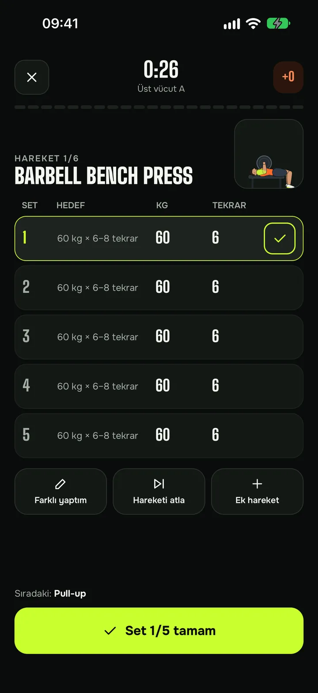
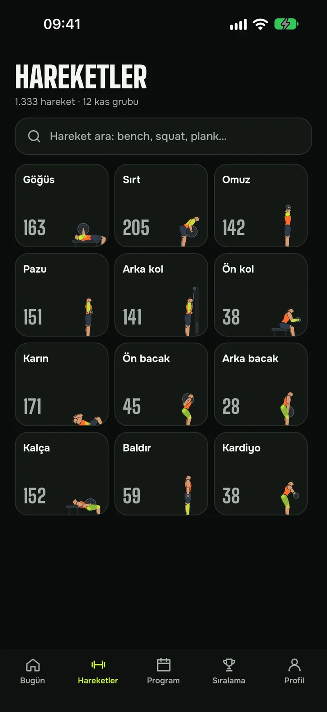
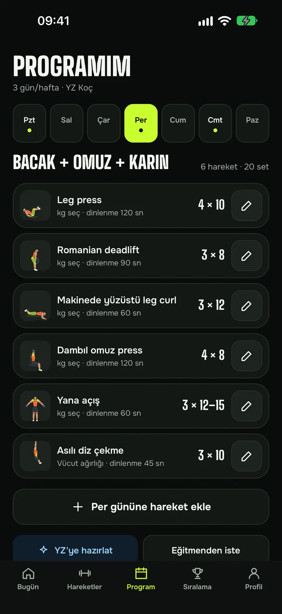
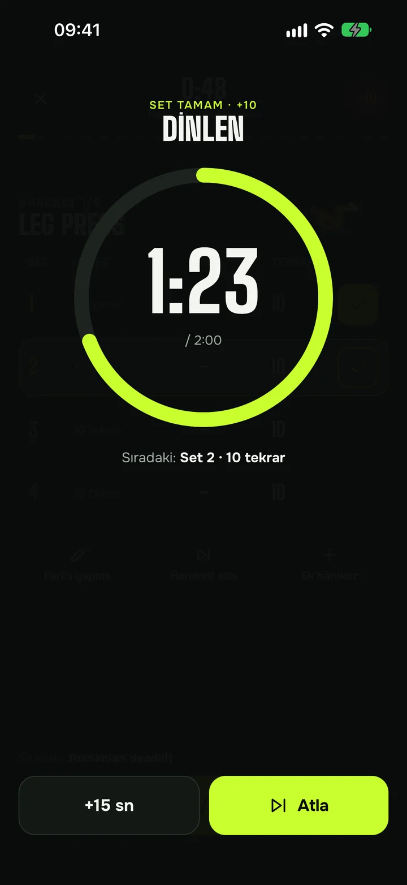
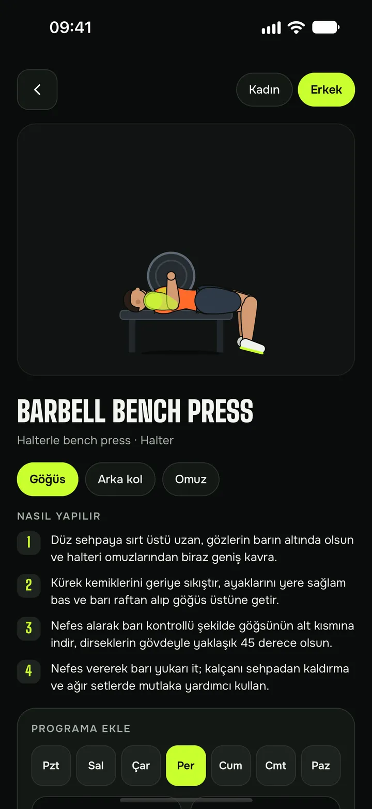

YZ Pro ile ayrıntılı program
Hedefini, sevdiğin ve kaçındığın hareketleri, sakatlıklarını ve süreni kendi cümlelerinle anlat; YZ koç programını sıfırdan kursun. Aylık YZ Pro ile her ay 2 program ya da tek seferlik paket.
01Salonda telefonla boğuşma. FORMA bugünkü antrenmanını önüne koyar, setini işaretlersin, dinlenmeni sayar, ilerlemeni hatırlar.
Her ekran ter içinde, ayakta, tek elle kullanılmak için tasarlandı: büyük dokunma alanları, net sayılar, gereksiz hiçbir şey.

Hareketi animasyonla gör, ağırlığı ve tekrarı tek dokunuşla ayarla, seti işaretle. Dinlenme sayacı kendiliğinden başlar; süre dolunca titreşimle haber verir.

12 kas grubu, serbest ağırlıktan makineye, vücut ağırlığından kardiyoya. Her hareket FORMA'nın kendi çizdiği figürle, doğru formuyla oynar; kadın ya da erkek figürüyle izle.

Yaşını, kilonu, boyunu, kaç gün çalışabileceğini ve hedefini söyle; YZ koç sana uygun haftalık programı kursun. İlk YZ programın ücretsiz. İstersen programını kendin de kurabilirsin.
FORMA yalnızca bir defter değil. Programını kendi cümlelerinle iste, ligde yarış, seriyi bozma.
Hedefini, sevdiğin ve kaçındığın hareketleri, sakatlıklarını ve süreni kendi cümlelerinle anlat; YZ koç programını sıfırdan kursun. Aylık YZ Pro ile her ay 2 program ya da tek seferlik paket.
01Her set, tamamlanan gün ve kişisel rekor puan kazandırır. Haftanın sonunda ligde yerini gör; ara verirsen puan erir, geri dönersen bonus kazanırsın.
02Planladığın günlerde antrenmanı tamamla, seriyi büyüt, rozetleri topla.
Antrenman günlerinde, seçtiğin saatte nazik bir hatırlatma.
Hesapsız da kullanılır; veriler önce telefonunda tutulur. Hesabını uygulamadan tek adımda silebilirsin.
Hedefin, deneyimin, haftada kaç gün çalışacağın. Hesap açmadan başlayabilirsin.
Hesap aç, ilk YZ programın ücretsiz. Ya da kütüphaneden kendi programını kur; daha ayrıntılısı için YZ Pro.
Bugünün antrenmanı ana ekranda. Seti işaretle, dinlen, puanı topla.


Bugünün hareketi bileğinde: antrenmanı saatten başlat, seti işaretle ya da çift dokunmayla onayla, dinlenme bitince titreşimle haber alsın, canlı nabzını gör. Telefonla anında eşitlenir; nabız verin cihazından çıkmaz.
Antrenman takibi, hareket kütüphanesi, kendi programını kurma ve lig ücretsizdir. Hesap açınca ilk YZ programın da ücretsiz; kendi isteklerine göre hazırlanan ayrıntılı YZ programları için uygulama içinden aylık YZ Pro aboneliği (her ay 2 program) ya da tek seferlik paket alınır. Abonelik App Store'dan istediğin zaman iptal edilebilir.
Hayır. Hesapsız başlayıp programını kendin kurabilirsin; veriler telefonunda kalır. YZ programı, YZ Pro, lig ve yedekleme için hesap gerekir.
Evet. Antrenman, program ve kütüphane çevrimdışı çalışır; bağlantı geldiğinde hesabınla eşitlenir.
Rahatsızlık bilgisi yalnızca açık rıza verirsen kaydedilir ve yalnızca programını sana uygun hâle getirmek için kullanılır. Ayrıntılar KVKK Aydınlatma Metni'nde.
Uygulamada Profil → Hesabımı sil adımlarıyla ya da hesap silme sayfasından anında silebilirsin.
Önce iPhone ile başlıyoruz; Android sürümü yol haritamızda.
FORMA şu an TestFlight'ta. İlk deneyenlerden olmak için bize yaz, davet bağlantısını gönderelim.